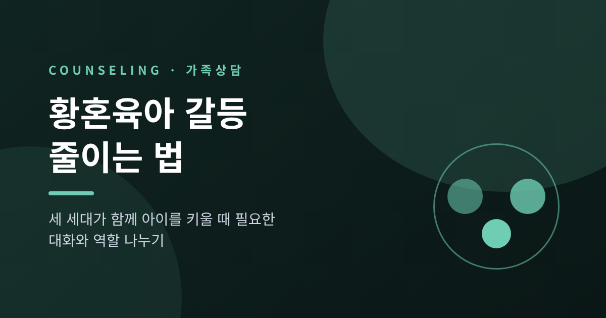
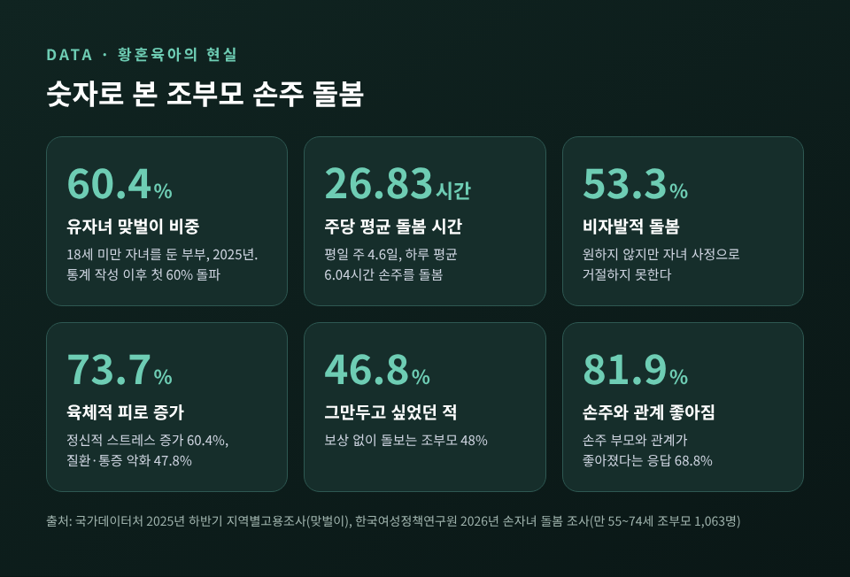
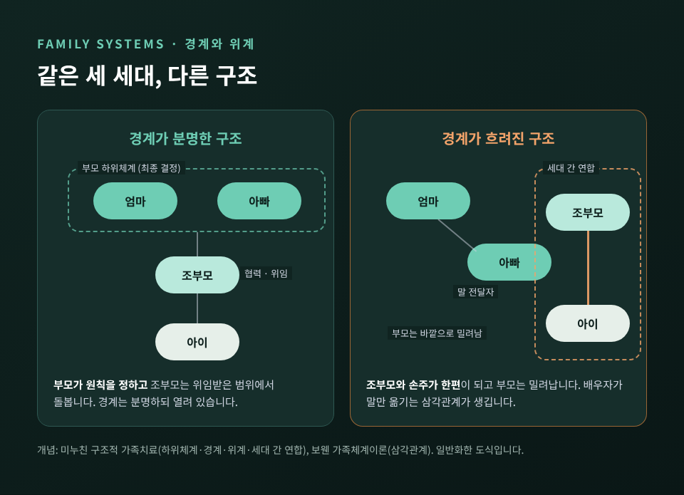
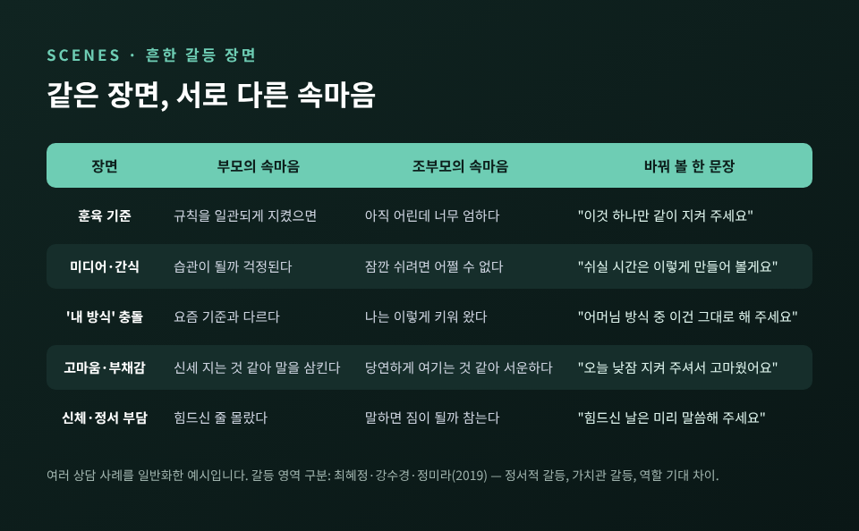
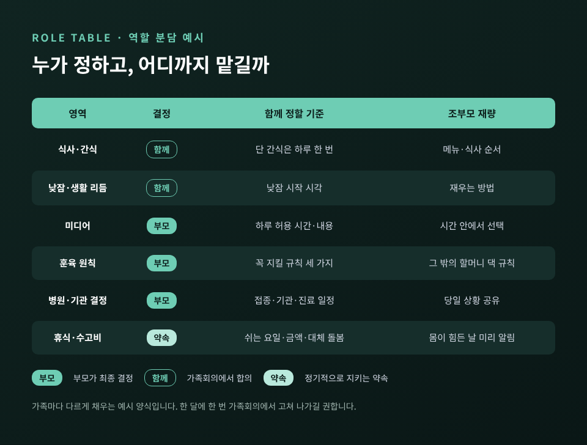
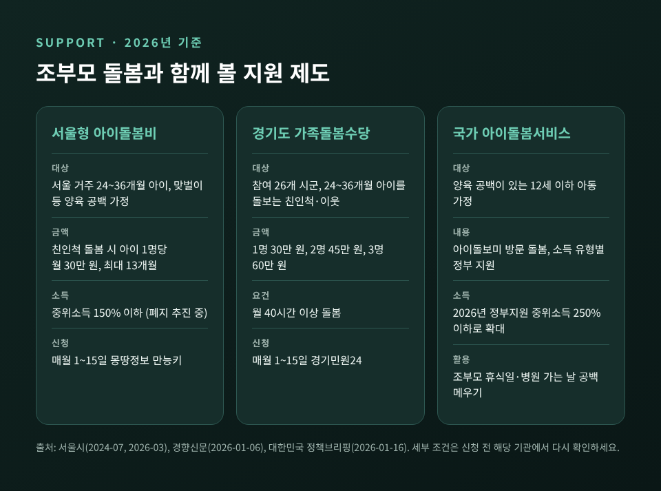

황혼육아 갈등 줄이는 법 — 조부모와 부모가 함께 정하는 대화와 역할

이번 글에서는 맞벌이 가정의 조부모 양육, 흔히 황혼육아라고 부르는 돌봄에서 생기는 갈등을 정리해 보겠습니다. 결론부터 말씀드리면 갈등의 크기를 가르는 것은 사랑의 양이 아니라 대화의 구조입니다. 누가 무엇을 정하는지, 얼마나 자주 이야기하는지, 고마움과 휴식을 어떻게 주고받는지가 핵심입니다.
■ 숫자로 본 황혼육아의 현실
18세 미만 자녀를 둔 부부 가운데 맞벌이 비중은 2025년 60.4%였습니다. 통계 작성 이후 처음으로 60%를 넘었습니다. 막내가 6세 이하인 가구도 56.5%로, 한 해 사이 3.3%p 올랐습니다.
그 빈자리를 메우는 사람이 조부모입니다. 한국여성정책연구원이 2026년 5월 내놓은 조사는 주당 15시간 이상 손주를 돌본 만 55~74세 조부모 1,063명을 살폈습니다. 이들은 평일 주 4.6일, 하루 평균 6시간 남짓 손주를 돌봤습니다. 일주일로 치면 26.83시간, 시간제 일자리 하나에 가까운 노동입니다.
마음은 어떨까요. 절반이 넘는 53.3%가 "원하지 않지만 자녀 사정으로 거절하지 못한다"고 답했습니다. 육체적 피로가 늘었다는 응답은 73.7%, 정신적 스트레스가 늘었다는 응답은 60.4%였습니다. 기존 질환이나 통증이 나빠졌다는 응답도 47.8%에 이릅니다. 그만두고 싶다고 생각한 적이 있다는 사람은 46.8%였고, 48%는 아무런 보상 없이 돌보고 있었습니다.

다만 같은 조사에는 다른 얼굴도 있습니다. 손주와 관계가 좋아졌다는 응답이 81.9%, 손주의 부모와 관계가 좋아졌다는 응답도 68.8%였습니다. 힘들지만 의미 있는 일. 황혼육아는 대체로 이 두 감정이 함께 갑니다.
■ 가족체계이론으로 보면 무엇이 흔들리는가
가족상담에서는 가족을 하나의 체계로 봅니다. 구조적 가족치료를 세운 살바도르 미누친은 가족을 부부, 부모, 자녀 같은 하위체계로 나누어 설명했습니다. 건강한 가족은 하위체계 사이의 경계가 분명하면서도 적당히 열려 있습니다. 그리고 보통은 부모 하위체계가 자녀에 대한 결정 권한을 갖습니다. 이것을 위계라고 부릅니다.
조부모가 양육을 맡으면 부모 하위체계 안에 한 세대가 더 들어옵니다. 여기서 두 가지가 흔들리기 쉽습니다. 하나는 "최종 결정은 누가 하는가"라는 위계입니다. 다른 하나는 세대 간 연합입니다. 할머니와 손주가 한편이 되어 부모를 바깥에 세우는 모양이 대표적입니다. 미누친은 이런 세대 간 연합을 기능이 어긋난 가족의 특징으로 보았습니다.
보웬 가족치료의 삼각관계 개념도 도움이 됩니다. 두 사람 사이의 긴장이 커지면 제3자를 끌어들여 긴장을 나눕니다. 그러면 관계는 잠시 안정되지만 문제 자체는 풀리지 않습니다. 시어머니와 며느리 사이에서 남편이 말을 전하는 역할만 맡는 장면, 부모와 조부모의 불편함이 아이의 떼쓰기 문제로 옮겨 가는 장면이 그렇습니다.

■ 자주 부딪히는 다섯 가지 장면
상담실에서 자주 듣는 장면은 대체로 비슷합니다. 아래는 특정 가족이 아니라 여러 사례를 일반화한 모습입니다.
첫째, 훈육 기준입니다. 부모는 울어도 정해진 규칙을 지키길 원하고, 조부모는 "아직 어린데"라며 안아 줍니다. 둘째, 미디어와 간식입니다. 저녁에 데리러 가 보니 영상이 켜져 있고 사탕 봉지가 보입니다. 셋째, '내 방식' 충돌입니다. 기저귀 떼는 시기, 옷 입히는 두께, 낮잠 시간까지 세대마다 상식이 다릅니다. 넷째, 고마움과 부채감입니다. 부모는 신세를 지고 있다는 생각에 말을 삼키고, 조부모는 서운함을 쌓아 둡니다. 다섯째, 조부모의 몸과 마음의 한계입니다. 손목과 허리가 아프다는 말이 농담처럼 나오다가 어느 날 갑자기 "더는 못 하겠다"로 바뀝니다.
연구도 이런 장면을 뒷받침합니다. 서울·경기에서 손주를 함께 키우는 할머니와 어머니 297쌍을 분석한 연구는 갈등을 세 갈래로 보았습니다. 의견이 무시당했다는 서운함, 양육 방식이 다른 데서 오는 가치관 차이, 그리고 서로에 대한 역할 기대의 차이입니다. 어머니는 일관된 양육을 바라고, 할머니는 자신의 어려움을 알아주길 바라는 경우가 많았습니다.

■ 아이에게는 어떤 영향이 있을까
결론은 한쪽으로 말하기 어렵습니다. 조부모가 아이의 건강과 발달에 미치는 영향을 다룬 연구 206편을 검토한 2019년 체계적 문헌고찰은, 연구마다 조건이 너무 달라 일반화할 수 없다고 밝혔습니다.
긍정적인 결과부터 보겠습니다. 영국 청소년 1,515명을 조사한 연구에서는 조부모와 학교생활을 자주 이야기하고 조언을 구할 수 있다고 느끼는 아이일수록 문제행동이 적고 또래 관계가 원만했습니다.
반대 방향의 결과도 있습니다. 23편을 묶은 메타분석에서는 조부모 양육이 아동의 과체중·비만 위험 증가와 연관되었습니다. 단 음식을 사랑의 표현으로 건네거나 "잘 먹어야 건강하다"는 세대의 인식이 원인일 수 있다고 연구진은 추정했습니다. 다만 이는 연관성이며 원인이 밝혀진 것은 아닙니다.
제가 가장 눈여겨보는 것은 앞서 말씀드린 297쌍 연구입니다. 할머니와 어머니의 결속도가 높을수록 갈등은 낮았습니다. 그런데 의사소통을 함께 넣어 분석하자 결속도의 직접 효과는 사라지고, 의사소통을 거쳐서만 갈등이 줄어드는 것으로 나타났습니다. 그리고 이 연구가 인용한 선행연구들은 어른들 사이의 갈등이 영유아의 사회성 발달과 정서 문제에 영향을 준다고 봅니다.
"아이에게 중요한 것은 누가 키우느냐보다 어른들이 어떻게 이야기하느냐입니다."
■ 합의를 만드는 대화와 역할 조정법
예전에는 "알아서 잘 봐 주세요"가 부탁의 전부였습니다. 지금은 무엇을 맡기고 무엇을 남겨 둘지 미리 적어 두는 가족이 늘고 있습니다. 아래 네 가지를 권합니다.
1. 역할 분담 표를 함께 만듭니다. 식사·낮잠·놀이처럼 일상 돌봄은 조부모의 재량에 맡기고, 예방접종·기관 선택·훈육 원칙처럼 큰 결정은 부모가 맡는 식입니다. "꼭 지킬 것 세 가지"와 "할머니 댁 규칙으로 둬도 되는 것"을 나누어 적으면 사소한 충돌이 크게 줄어듭니다. 모든 것을 통일하려 하기보다 지킬 선을 좁히는 편이 현실적입니다.

2. 정기 가족회의를 엽니다. 불편한 이야기는 쌓이기 전에 꺼내는 편이 낫습니다. 한 달에 한 번, 30분 정도 날을 정해 두면 불만이 감정이 아니라 안건이 됩니다. 순서는 고마웠던 일 먼저, 조정할 일 하나, 다음 달 일정 확인 정도로 짧게 둡니다. 친정이든 시댁이든 자기 부모와의 이야기는 그 집 자녀가 먼저 꺼내는 것이 원칙입니다. 배우자가 전달자가 되는 삼각관계를 막기 위해서입니다.
3. 감사를 구체적으로 표현합니다. "고생하셨어요"보다 "오늘 낮잠 시간 지켜 주셔서 저녁이 편했어요"가 오래 남습니다. 조사에서 조부모의 55.8%는 손주 돌봄을 당연한 역할로 여겼지만, 53.3%는 거절하지 못해서 돌보고 있었습니다. 당연함과 부담 사이에서 흔들리는 마음에는 구체적인 인정이 힘이 됩니다.
4. 돌봄 수당과 휴식을 제도로 만듭니다. 조부모 돌봄의 48%가 무보상이었습니다. 금액보다 중요한 것은 "부탁"을 "약속"으로 바꾸는 일입니다. 정해진 수고비, 주 1회 쉬는 날, 아플 때 대신할 사람을 미리 정해 두십시오. 이때 기댈 수 있는 공적 제도가 있습니다.
■ 2026년 현재 활용할 수 있는 지원
서울시의 서울형 아이돌봄비는 2023년 9월 '손주돌봄수당'이라는 이름으로 시작했습니다. 서울에 사는 24~36개월 아이를 키우는 맞벌이 등 양육 공백 가정, 중위소득 150% 이하가 대상입니다. 4촌 이내 친인척이 돌보면 아이 1명당 월 30만 원, 최대 13개월을 받습니다. 신청은 매월 1~15일 서울시 '몽땅정보 만능키' 누리집에서 합니다.
2026년에는 약 4,300명 규모로 이어지며, 조력자가 아플 때를 대비해 부조력자 1명을 더 지정할 수 있고 부조력자의 돌봄시간 제한도 풀렸습니다. 2025년 말까지 참여한 5,466명 가운데 조력자의 87.3%가 할머니였습니다. 소득기준 폐지와 지원 연령 48개월 확대는 서울시가 추진하겠다고 밝혔지만, 확정 여부는 신청 전에 다시 확인하시길 권합니다.
경기도 가족돌봄수당은 2026년 참여 시군이 14곳에서 26곳으로 늘었습니다. 24~36개월 아이를 월 40시간 이상 돌보는 친인척이나 이웃에게 1명 30만 원, 2명 45만 원, 3명 60만 원을 지급합니다. 전국 단위의 아이돌봄서비스는 2026년 정부지원 소득기준을 중위소득 250% 이하로 넓혔습니다. 조부모가 쉬는 날이나 병원에 가는 날, 이 서비스로 빈 시간을 메우는 방식도 생각해 볼 만합니다.

정리하면 이렇습니다. 황혼육아의 갈등은 누군가의 성격 탓이 아니라, 세 세대가 한 체계 안에 들어오면서 생기는 구조의 문제인 경우가 많습니다. 그래서 해법도 구조에 있습니다. 결정권을 분명히 하고, 대화의 자리를 정례화하고, 고마움과 휴식을 약속으로 만드는 것입니다.
그래도 대화가 계속 같은 자리에서 막힌다면 혼자 감당하지 않으셔도 됩니다. 전국 가족센터(옛 건강가정지원센터)에서 가족상담과 부모교육을 받을 수 있고, 대표전화 1577-9337이나 가족센터 누리집에서 가까운 센터를 찾을 수 있습니다. 조부모의 우울감이나 아이의 정서 문제가 걱정된다면 가족상담 전문가나 정신건강 전문의의 도움을 받으시길 권합니다.
손주를 봐 주는 일이 언제까지 기쁨으로 남을 수 있겠냐고 물으신다면, 서로의 한계를 말할 수 있는 동안이라고 답하고 싶습니다.
참고 자료
- 경향신문, 맞벌이 돌봄 공백 메운 조부모들…절반은 "그만두고 싶다"(2026-05-08) — https://www.khan.co.kr/article/202605081540001
- 세계일보, 맞벌이 틈 메우는 조부모…손주 돌봄 2명 중 1명은 '강제 육아'(2026-05-08) — https://www.segye.com/newsView/20260508509000
- 서울경제, 유자녀 맞벌이 60% 돌파(2026-06-18) — https://www.sedaily.com/article/20057258
- 뉴시스, 맞벌이 비중 48.6% 역대 최고(2026-06-18) — https://www.newsis.com/view/NISX20260618_0003673686
- 최혜정·강수경·정미라(2019), 손자녀 공동양육 조모와 성인자녀의 결속도가 갈등에 미치는 영향에서 의사소통의 매개효과 — https://www.koreascience.or.kr/article/JAKO201912262462907.pdf
- 한국보건사회연구원(2022), 손자녀 양육과 고령자의 건강, 인지기능 및 삶의 만족도에 관한 연구 — https://www.kihasa.re.kr/api/kihasa/file/download?seq=21877
- 양혜경(2016), 손자녀 돌봄이 조부모의 건강에 미치는 영향 — https://koreascience.kr/article/JAKO201626542341019.page
- Sadruddin et al.(2019), How do grandparents influence child health and development? — https://pubmed.ncbi.nlm.nih.gov/31539783/
- WashU Source, Being raised by grandparents may increase risk for childhood obesity(2020) — https://source.washu.edu/2020/02/being-raised-by-grandparents-may-increase-risk-for-childhood-obesity/
- APA 보도자료, Attar-Schwartz 외(2009) Journal of Family Psychology 연구 소개 — https://www.apa.org/news/press/releases/2009/02/children-grandparents
- Structural family therapy(Minuchin, 1974) — https://en.wikipedia.org/wiki/Structural_Family_Therapy
- The Bowen Center, Triangles — https://thebowencenter.org/triangles
- 서울시, 서울형 아이돌봄 2026 추진(2026-03-05) — https://news.seoul.go.kr/welfare/archives/560199
- 서울시, 서울형 아이돌봄비 안내(2024-07-19) — https://news.seoul.go.kr/welfare/archives/558300
- 세계일보, 서울형 손주돌봄 참여 5,466명(2026-02-04) — https://www.segye.com/newsView/20260203519709
- 경향신문, 경기도 가족돌봄수당 26개 시군 확대(2026-01-06) — https://www.khan.co.kr/article/202601061211001
- 대한민국 정책브리핑, 아이돌봄서비스 중위소득 250% 확대(2026-01-16) — https://www.korea.kr/news/customizedNewsView.do?newsId=148958189
- 성평등가족부 가족센터 안내 — https://www.mogef.go.kr/sp/fam/sp_fam_f003.do